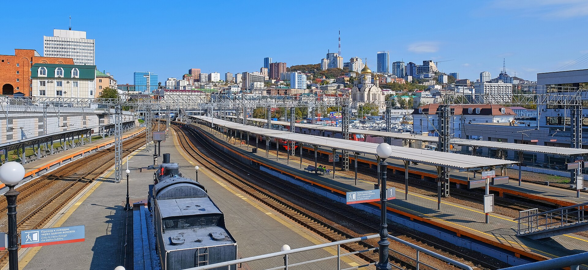

Светланская и арка
От сквера у бухты по Светланской к триумфальной арке цесаревича. Фуникулёр на сопку Орлиное гнездо — если идёт, это лучший первый кадр Золотого Рога.
День 02 из 10
Пеший день по Владивостоку. Без него поездка видела бы мосты и не видела бы город, ради которого их строили.
От сквера у бухты по Светланской к триумфальной арке цесаревича. Фуникулёр на сопку Орлиное гнездо — если идёт, это лучший первый кадр Золотого Рога.
Километровый столб 9288 на перроне, затем Корабельная набережная и гвардейская подводная лодка С-56.
Коса у мыса Эгершельд. На закате маяк 1910 года стоит в воде пролива. Ужин после этого — в центре, без спешки на другой берег.
Владивосток основан 2 июля 1860 года. Транспорт «Манджур» под командованием капитан-лейтенанта Алексея Шефнера вошёл в бухту Золотой Рог, отряд прапорщика Николая Комарова поставил пост. Имя городу дал генерал-губернатор Восточной Сибири Николай Муравьёв-Амурский. Бухту он сравнил с константинопольским Золотым Рогом ещё в 1859 году.
Светланская — главная улица, названная в честь фрегата. Кирпичные дома конца XIX века, банки, конторы, сегодня ещё и вывески Восточного экономического форума. Рядом арка, поставленная к приезду цесаревича Николая Александровича в мае 1891 года. В тот визит он заложил Уссурийский участок Транссиба. Нынешняя арка воссоздана в 2003 году.
На перроне вокзала стоит стела «9288»: столько километров отделяет этот путь от Москвы. Здание вокзала в нынешнем виде закончено в 1912 году. Рельсы важнее любого отдельного фасада. Пока город держался только морем, он был портом на краю. Дорога сделала его концом собственной страны.
С-56 на Корабельной набережной прошла войну на Северном флоте, куда её перегнали с Тихого океана, и вернулась домой уже музеем. Маяк Токаревского замыкает день: белая башня на косе, по которой в отлив можно пройти пешком. Навигационный огонь здесь до сих пор рабочий. Это хороший порог перед завтрашней яхтой: вечером вы смотрите на острова, утром выходите к ним.
С маяка уже виден архипелаг. Третий день выходит туда на яхте, к острову Попова.
